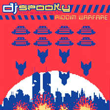

|

DJ Spooky buzzword of the day:
Powerbase Alpha's Info Retrieval Squad managed to get a few words
with afro-futurist extraordinaire DJ Spooky at his rare Sweden
appearance in Gothenburg, October 1999.
Spooky writes for Paper, Art Byte and other mags, and DJ:s in
New York. His name is associated with the illbient scene that
was written up in hip music magazines a couple of years back.
He has a forthcoming science fiction novel, And now a message
from our sponsors, and a novel dealing with intellectual property
called Flow my blood the DJ said.
I like
to use this parallel to tags in the New York subway system when talking
about DJing. They used to go for bombing whole trains so the trains would
carry their mark back and forth through the city. The goal was to get
"all city" so your tags could be seen all over New York. It
was a way of bypassing the official structure and a fight over social
space. DJing is kinda like that, sending music through the system. And
DJing is also a conceptual art form - a Gesamtkunstwerk. Records are the
"found objects" in a fragmented society, used in a collage form.
We're
sort of like the first generation to be completely saturated with media.
Culture has become a worldwide phenomenon. We've gotten to the point where
you could send something around the world and people around the world
would react in virtually the same way. DJ culture is a progenitor of global
culture. It bypasses the normal means of distribution of music and crosses
boundaries.
The last
ecological remix was the death of the dinosaurs. In the 21st century we
may have to face the consequenses of rampant consumerism.
I act
as a cipher translating between forms of culture. I traveled a lot when
I was a kid, maybe that's why I can deal with moving between different
situations. I try to make bridges between different scenes, I have no
problem dealing with both academic culture and pop culture. I feel fluid.
My conceptual
framework for "Riddim Warfare" was "war against the one
track mind". That was the general idea with the artwork and the music.
I don't
sympathize with the strict avant-garde scene. In Europe you have more
of patronage system, where the state finances academic music and there
are all these academic festivals you can keep going on. There, you can
sell 200 records and still be considered an important artist and never
have to relate to pop culture. In the US there's no infrastructure for
avant garde. You have to become your own patron. I do like the music,
though, like David Shea and John Zorn and all the Knitting factory stuff.
But they don't really deal with pop culture, and I think that's a problem.
Hip hop
is almost the perfect capitalist culture. It's all about fancy cars and
money and stuff. But the thing is, capitalism is driven by finding new
markets, finding new ideas and selling them, which makes hip hop a very
dynamic culture at the same time.
The
idea behind afro-futurism was to create a symposium of post-modern, or
electro-modern (as I like to say) discussion where you don't really know
who's who. Internet opens up a flow of ideas. Ethnicity and identity in
general is left in doubt. The uncertainty left people feeling very strange.
Someone would be considered a great authority on African American subjects
by a lot of black people on the list, while in reality he was white. Everyone
would assume someone named Goldberg to be a Jew, but he was in fact black,
and so on.
African
American culture is the first really post-modern culture. You have to
remember that everything, religions, communities and languages were erased.
Jews and other nomadic cultures in similar situations stress the importance
of holding on to traditions. For blacks in America today, hip hop is that
kind of thing. At the same time, hip hop can absorb anything from the
outside, incorporating it into its framework. It's a bit like American
culture, which is mostly the same thing. Black American culture is like
the official culture of the US. When people think about the US, both in
the US and in other parts of the world, they think about African American
culture. White people in New York dress just like black kids in the hood.
This is because of its fluid nature, I believe. There is always something
in flux. And American culture is like that too. The US has no central
culture, it just sucks everything in and then spits it out.
I hadn't
read Kodwo Eshun's book when I recorded Riddim Warfare. When I
read it, first I was pissed that he didn't put me in the book [More
Brilliant than the Sun]. Then I was amazed how he wrote a book that
exactly parallelled the ideas on my record. That kind of thing happens
to me all the time now. I get a thought and a couple of months later I
read about it in some magazine.
I think
the most homogenous cultures, those that have been isolated from the rest
of the world in some way, are the most friendly import nations of the
world. Japan is a good example of that. These countries are really hungry
for outside information.
I think
Mediterranean culture during Rome was the first real mix-culture, with
art and culture moving back and forth over vast areas. The US is kinda
like an accelerated Rome.
Some
of the kids are more interested in the theory than my actual music.
I think that's ok. It's great if I can get people interested in
that kind of thing, you know?
|